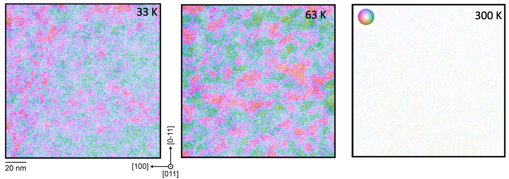

Strontium titanate (SrTiO₃) has puzzled scientists for decades. As it is cooled, it approaches the conditions for a ferroelectric transition, yet it remains quantum paraelectric instead of developing long-range polarization.
Using liquid-helium-cooled scanning transmission electron microscopy, our team directly imaged the local atomic displacements in this elusive low-temperature state. Rather than a uniformly nonpolar crystal, we found complex nanoscale polar textures, with neighboring regions exhibiting different dipole orientations. These observations provide a direct structural picture of quantum paraelectricity and reveal ordering that conventional measurements can average over.

The experiments required sustained, carefully aligned measurements at extremely low temperatures. Our work highlights how advances in cryogenic electron microscopy can open new windows into quantum materials.
As discussed in Harvard's feature on the discovery, an exciting next step is to tune SrTiO₃ using strain or chemical doping and watch how these local dipoles evolve toward ferroelectric order.
Read the paper: Imaging of nanoscale polar textures in quantum paraelectric SrTiO₃.